logos["e-textiles"] = {}
logos["e-textiles"]["small_circles"] = [
(0, 0),(0, 2),(0, 4),(2, 2),(2, 6),
(4, 0),(4, 4),(6, 0),(6, 2),(6, 6),
(4, 6),(0, 6),(6, 6),
]
logos["e-textiles"]["big_circles"] = [(2, 0), (2, 4), (6, 4), (4, 2)]
logos["e-textiles"]["connected"] = [
[(0, 0), (0, 2)],[(0, 2), (2, 2)],[(6, 0), (6, 2)],
[(2, 6), (4, 6)],[(0, 6), (2, 6)],[(0, 6), (0, 4)],
[(4, 4), (4, 6)],[(4, 6), (6, 6)],
]
logos["e-textiles"]["white_connected"] = [
[(-1, 3), (2, 3)],
[(5, -1), (5, 2)]
]This post details a consulting/research project for the Winchester School of Art (WSA) digital Rotunda platform, alongside Studio 3015. If you have a similar project or concept, feel free to contact me at tom.savage(at)hotmail.com
Context
The Rotunda at the Winchester School of Art is a largely digital platform for organizing and presenting research and events. Given the digital nature of the platform, constraints around static design and identity can be relaxed.
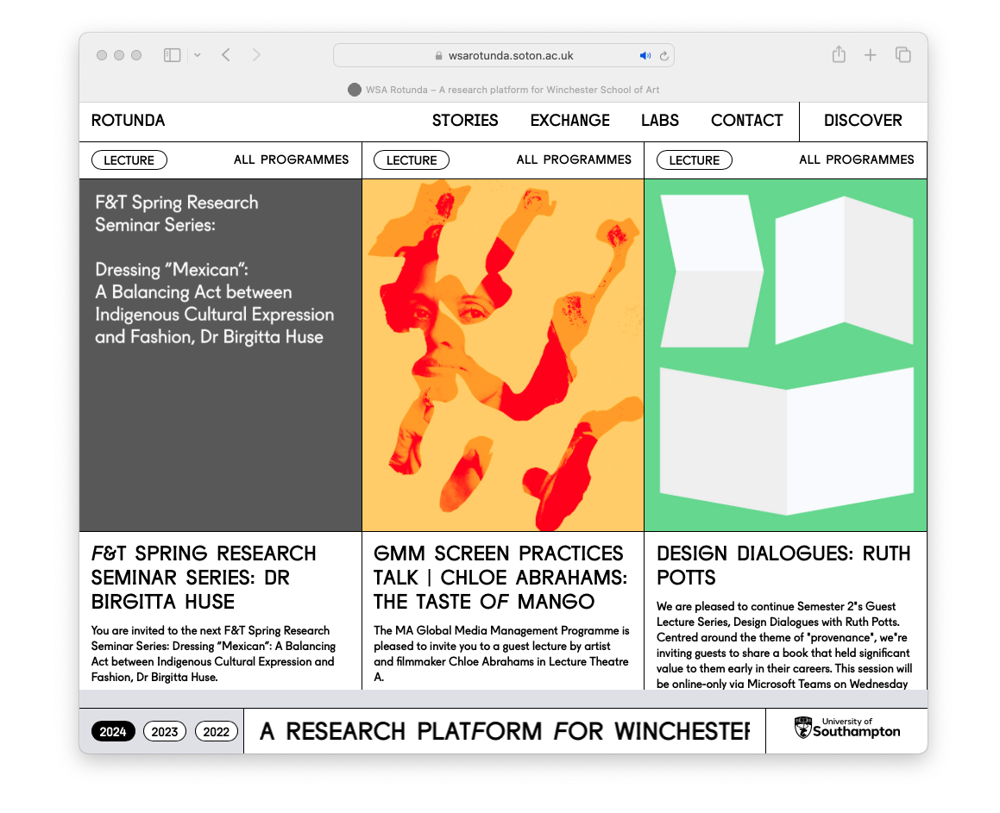
The goal of this project was to enable existing research lab identities to change dynamically in response to specific media such as text and images related to individual projects. Through the use of generative AI, the visual identity for each lab becomes responsive, adapting based on contextual information around specific initiatives.
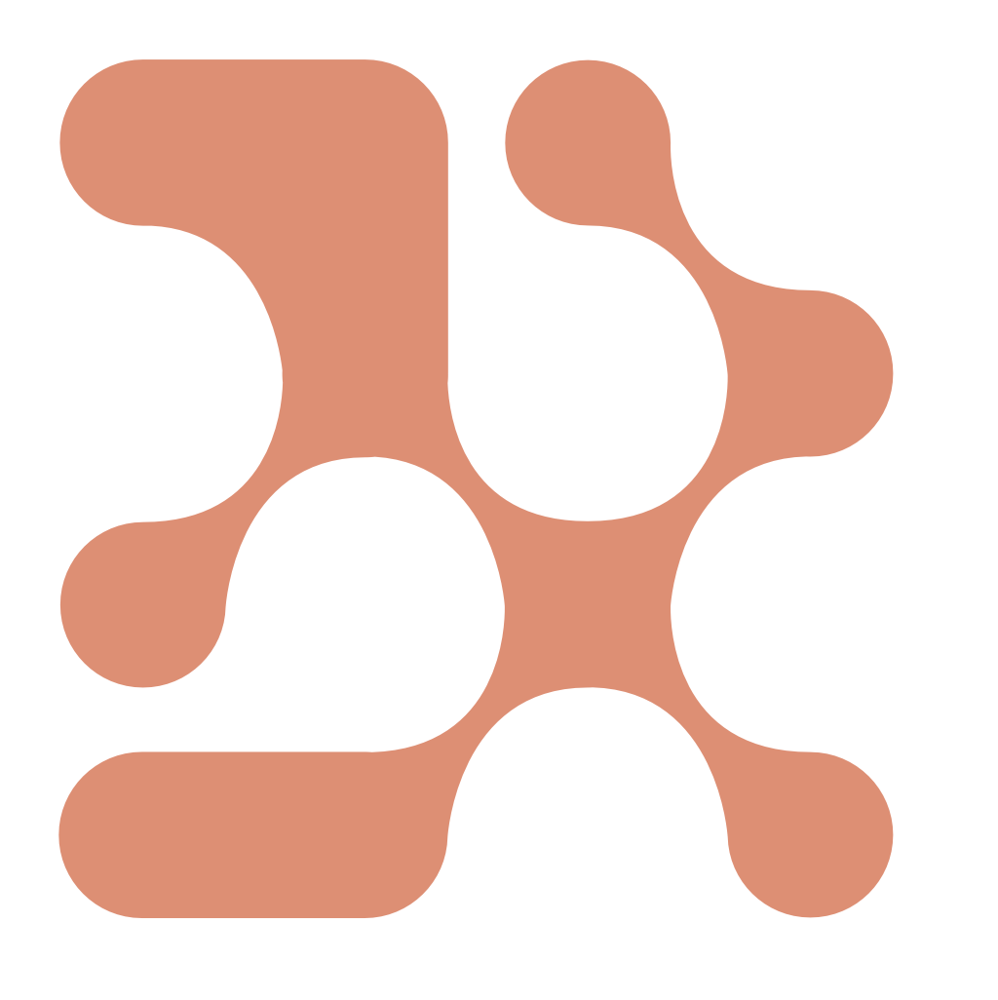
From Manual to Digital
The project began by recreating the existing logos for each lab in an automated manner using the svgpathtools library. This enabled programmatic modification of the logo forms via Python, while also obtaining SVG files by design which can be used within WSA graphics. Each logo is subsequently defined by a series of coordinates stored within a dictionary, enabling easy addition of new labs or modification of existing designs.
For example, here is the complete specification of the E-textile lab design.
To construct a given logo I used this information alongside svgpath tools to build up the representation in Python.
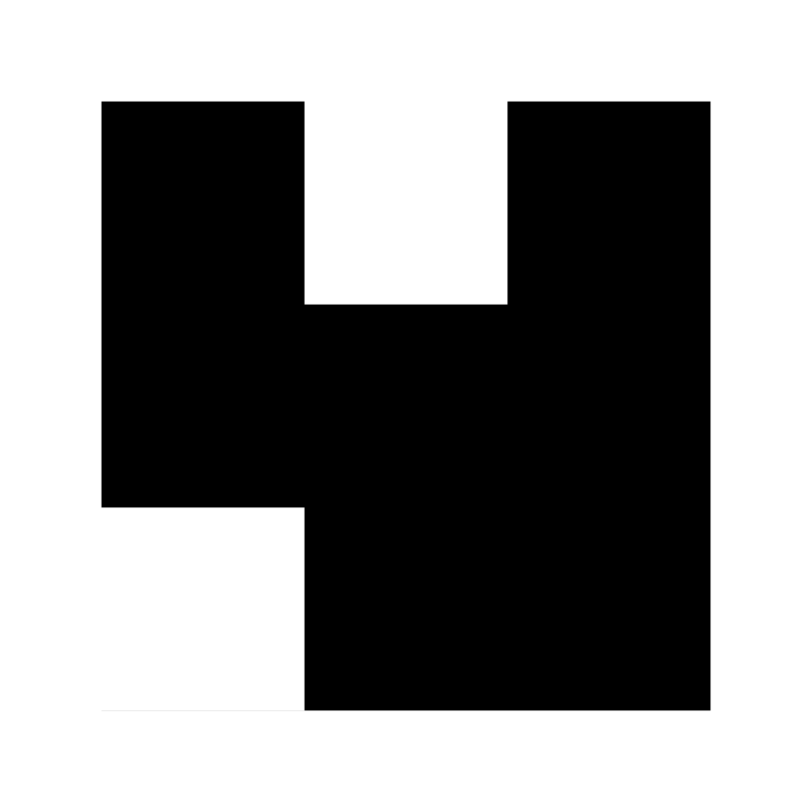
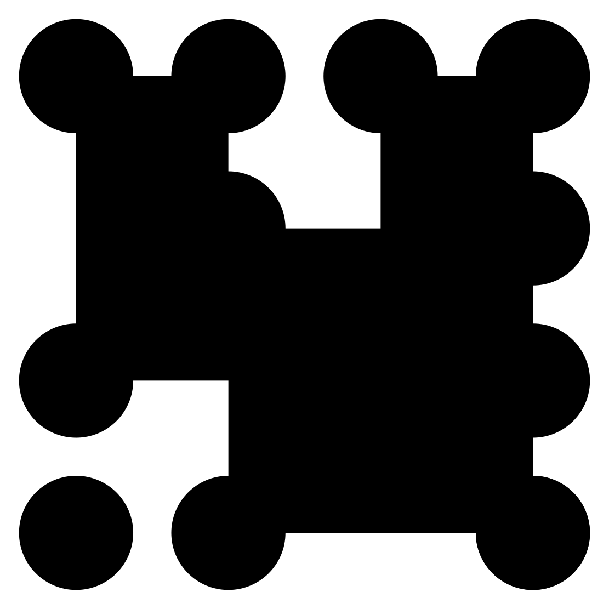
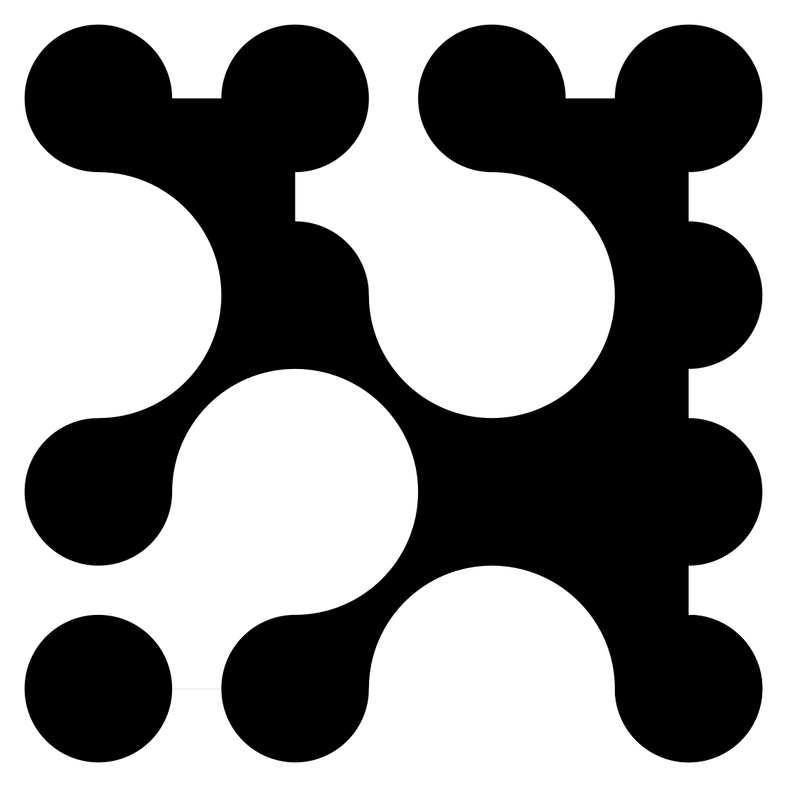
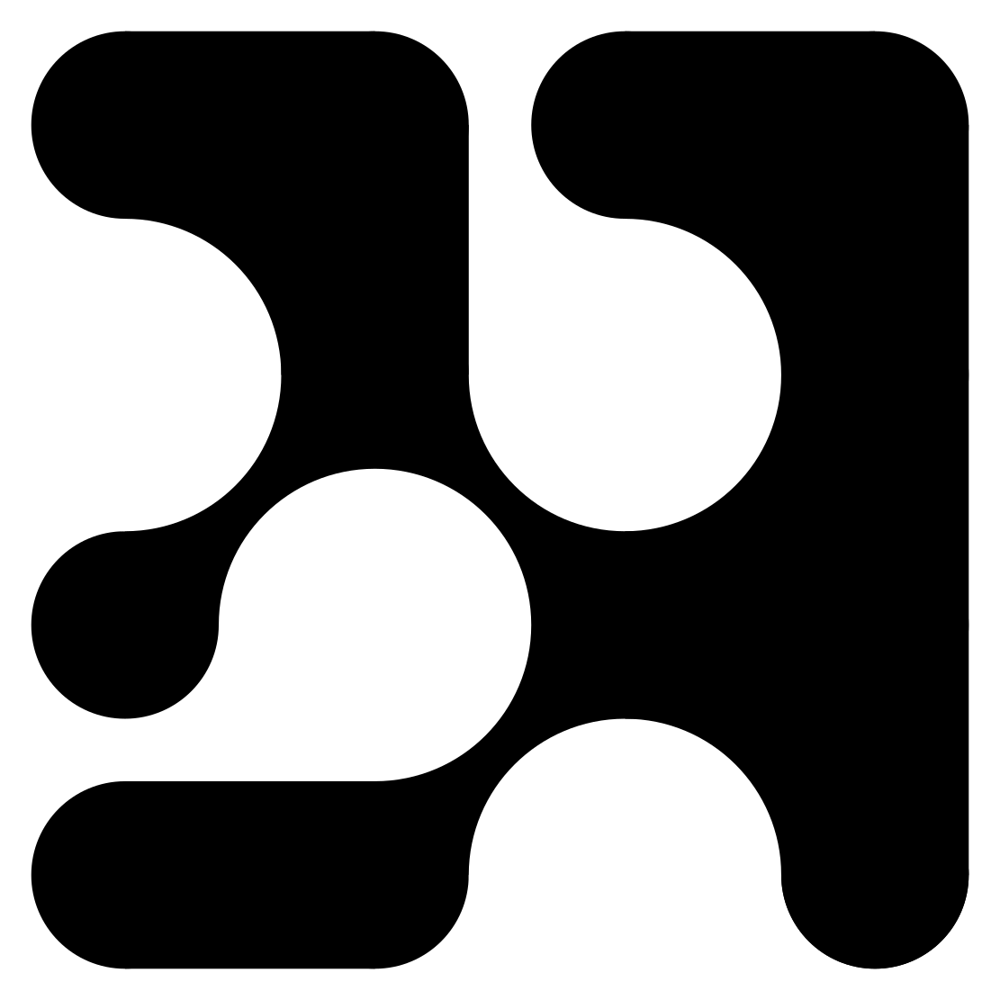
Given this level of control and automation over the general design space, the next step was determining how the logos should change in response to context. After some experimentation, two key ways were identified:
- Individual ‘shapes’ are allowed to grow and shrink, enabling either a more solid unified form, or a more distributed representation.
- Individual ‘shapes’ are switched from circles to squares, enabling a more digital and less connected form.
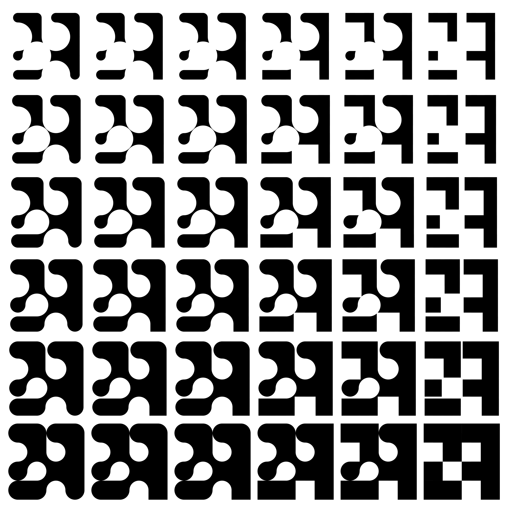
It was decided that these two parameters should provide a representation of how physically distributed a project is, as well how interdisciplinary a project is respectively.
These two parameters were chosen to represent how physically distributed a project is, as well as how interdisciplinary it is. By parameterizing the existing designs in this way, each lab’s identity can respond to contextual information around projects, while maintaining the overall form and identity in a controlled manner.
Colour
The colour of each identity with respect to the project is also inferred based on the content. The colour is allowed to change based on the following content characteristics:
- Technical content
- Philosophical content
- Emotional content
- Cultural content
The ‘amount’ of each descriptor is obtained by prompting a large-language model, and the respective values converted to individual cyan, magenta, yellow, and black values, resulting in a single CMYK colour.
Example:
CONTENT SCORE: {‘technical’: ‘65’, ‘philosophical’: ‘10’, ‘emotional’: ‘15’, ‘cultural’: ‘20’}
COLOUR EXPLANATION: The text primarily focuses on describing the technical capabilities and facilities of the WSA E-Textile Innovation Lab, including equipment for textile design, manufacturing, and e-textile development. It also mentions the lab’s mission of creating innovative and sustainable e-textiles, which has a philosophical aspect. The emotional and cultural content is relatively low, as the text is mainly informative about the lab’s operations.
CMYK: [0.636, 0.114, 0.155, 0.196]
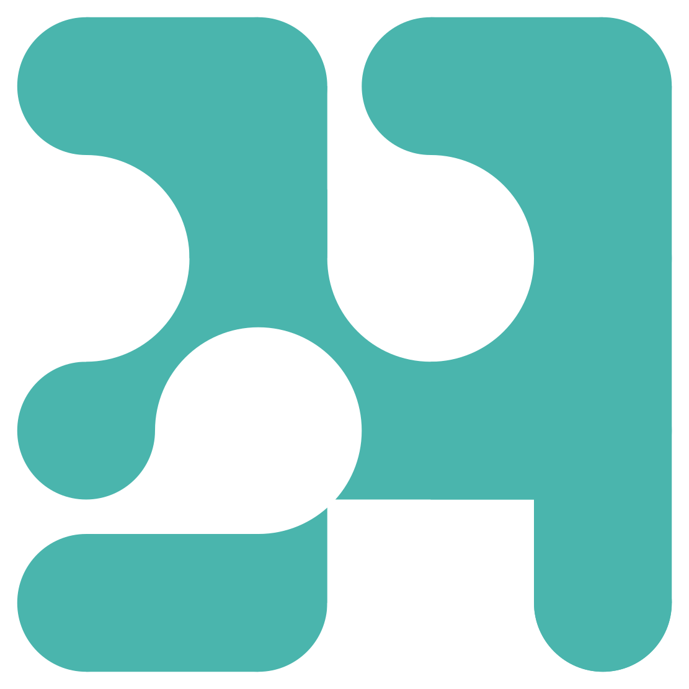
Inferring Parameters
To infer the parameters representing the physical distribution and interdisciplinary nature of a project, an LLM is prompted with both a description and image.
The information flow is as follows:
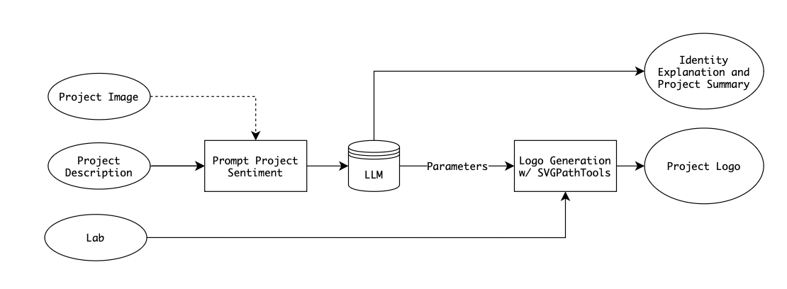
Some prompt engineering is performed to ensure that JSON is consistently returned and reliable explanations for the chosen parameters are provided. This includes providing examples of lab descriptions and respective parameters within the prompt as context. When applying image data, the image is first described, and then in a separate call, the description is used to inform the logo.
Each sentiment and subsequent parameter is prompted separately due to recent advances in low-cost, fast LLM inference to ensure that forgetting or context-shift doesn’t occur.
LLM Inference
LLM inference is performed on Anthropic’s Claude 3 Haiku. It was found to be extremely low cost, fast, and its performance is sufficient to accurately infer the sentiment of project descriptions and images.
UTC: 2024-03-14T11:50:31Z
Model Name: claude-3-haiku-20240307
Prompt: Describe this image.
Image:
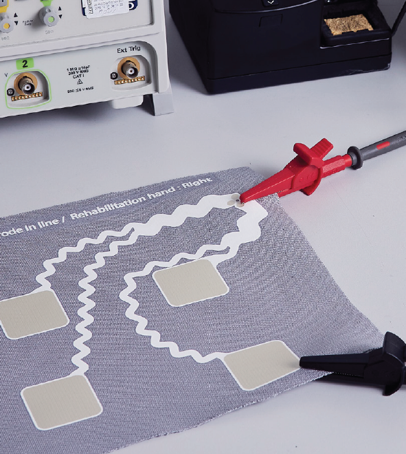
Output: This image shows various electronic and technical equipment. There is a device that appears to be a test instrument or measurement tool, with knobs and displays. Next to it is a device that looks like a portable audio player or recorder. On the table in front of these devices is a document or diagram labeled “Code in Line / Rehabilitation Hand-Night”, which seems to be some kind of technical or engineering schematic. There is also a red tool or instrument that appears to be used for testing or working with the equipment.
Input Tokens: 795 ($0.25/1000000 tokens)
Output Tokens: 108 ($1.25/1000000 tokens)
Total Cost: $0.00033375 (0.03¢)
Time: 3.12 (s)
Creating an Interface
The goal of the interface for the generative lab identity inference was to make it as simple as possible for those with a non-technical background to use, on any device, including Winchester School of Art teaching and administrative staff, and students.
To achieve this, the Python implementation was packaged into a Flask app with a basic password-protected front-end. The application is then hosted on Heroku, a cloud-based platform. This exposes the application on the web for anyone to use, protects against the LLM API credits being used by the public, and removes the need to install or interact with code.
The user is prompted to provide a project title, description, project visual, and the lab itself. This information is then used as previously described to produce an independent lab logo, with explanation.
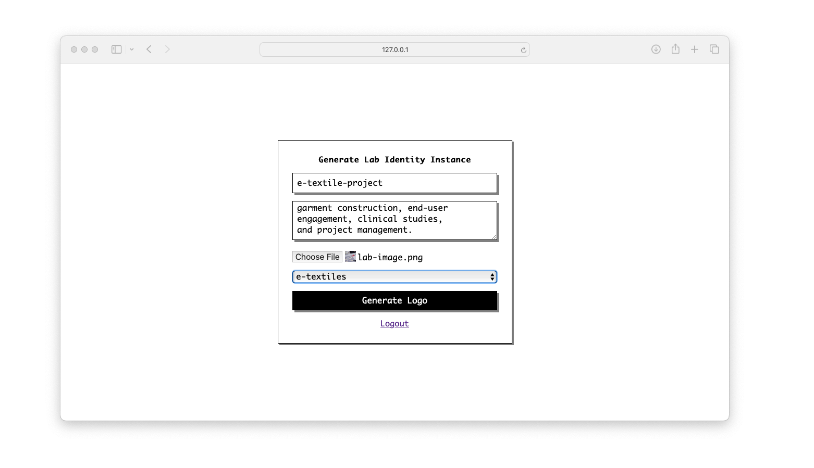
The user is prompted to provide a project title, description, project visual, and the lab itself. This information is then used as previously described to produce an independent lab logo, with explanation.
Creating a Loading Image
In order to design a visually interesting graphic for the front end, an image diffusion model was fine-tined. To begin with a new 3D model of The Rotunda was created in AutoCAD.
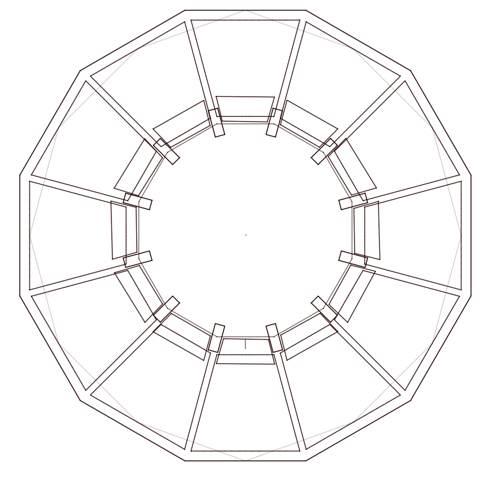 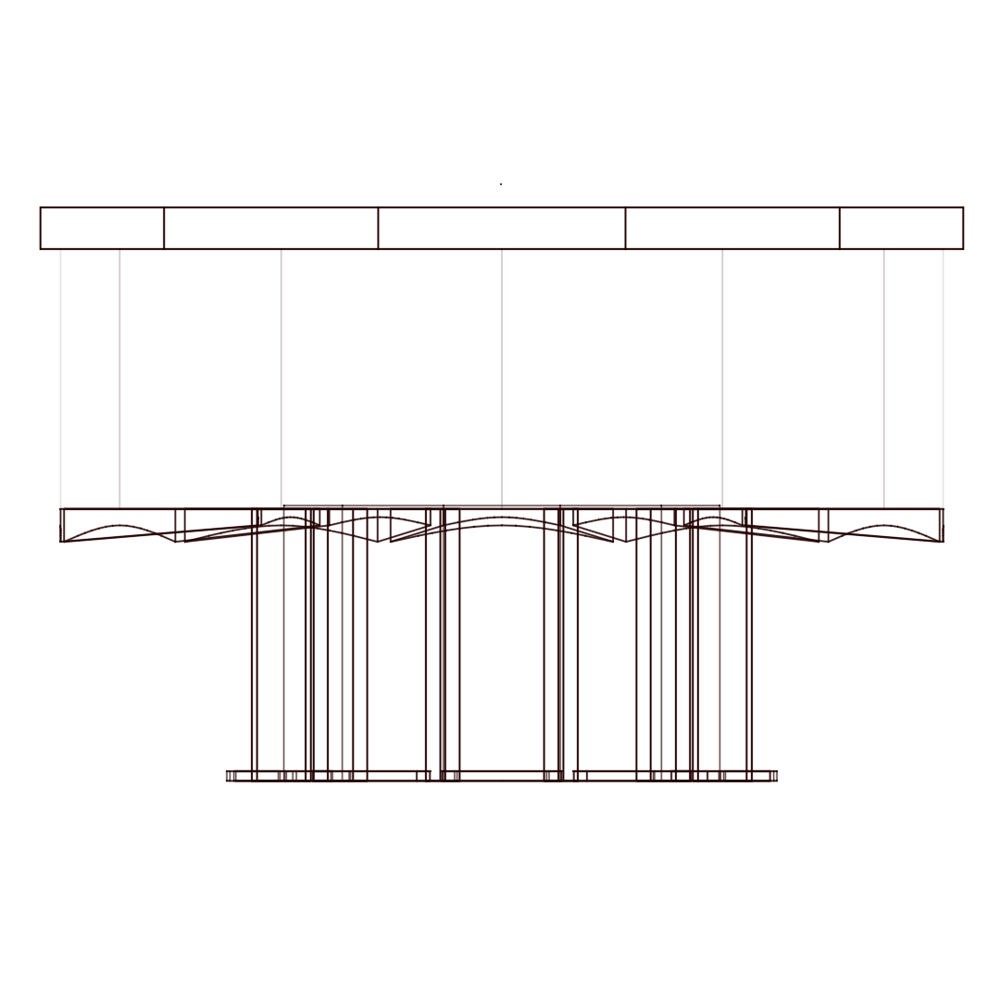
Using this 3D model a number of synthetic images of the building were created and combinined with an existing dataset of real photographs.


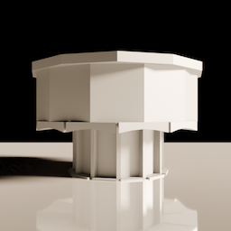


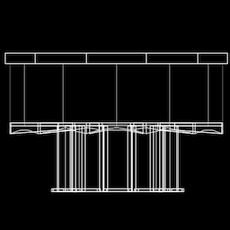

This dataset of approximately 40 images was then used to fine-tuned a Stable Diffusion model using textual inversion to learn the concept of The Rotunda.
This custom token is then used to perform inference (or generation in the context of generative AI) to generate novel representations and views of the building.
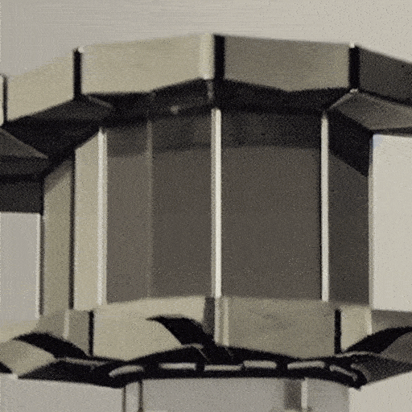
These representations (in the form of a GIF) provide a sense of the technology involved within the lab logo generation tool, this GIF is also displayed whilst inference is being performed in the background.
The images, whilst individually imperfect, collectively result in a coherent representation.
Output
An example final output for a given project within the E-Textiles lab is as follows: